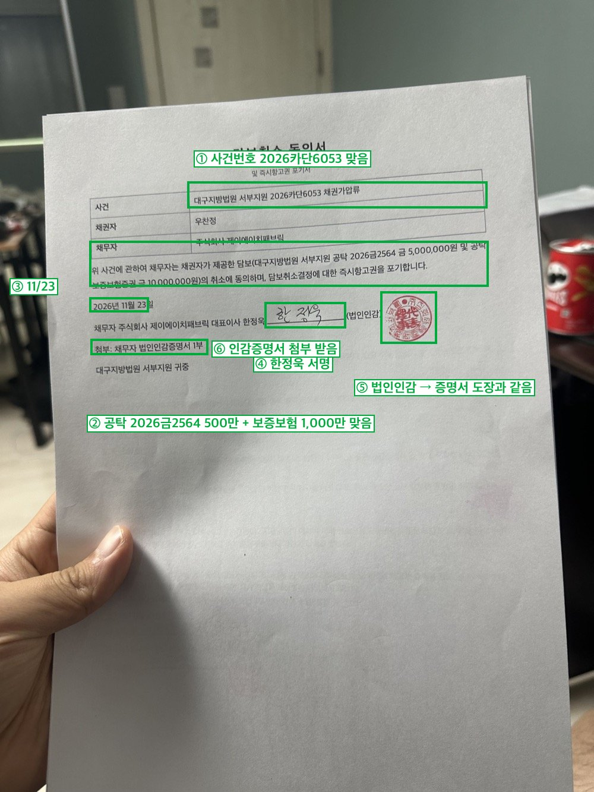
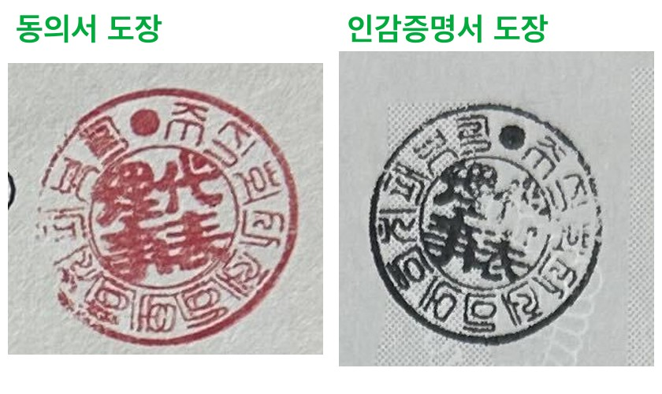
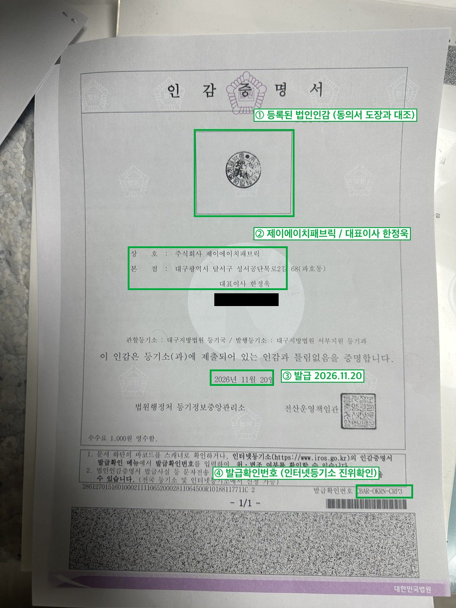
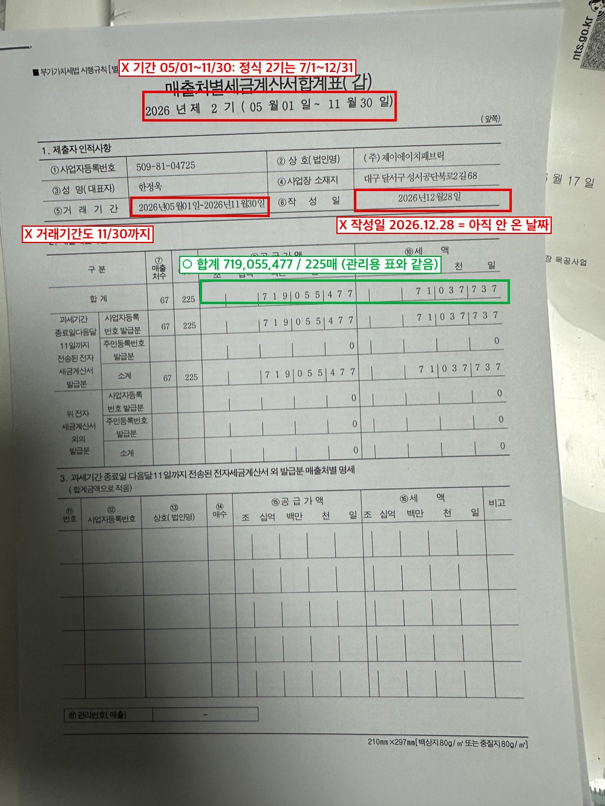
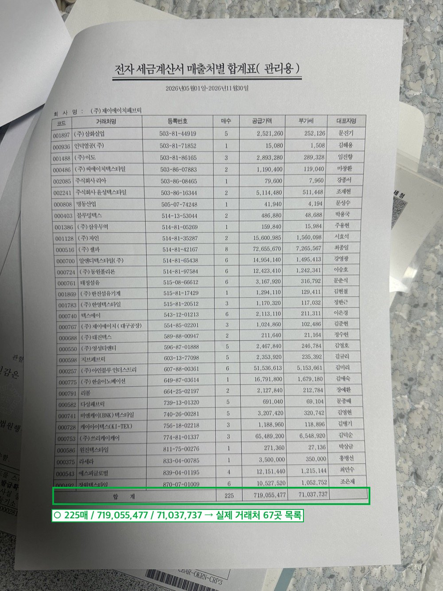
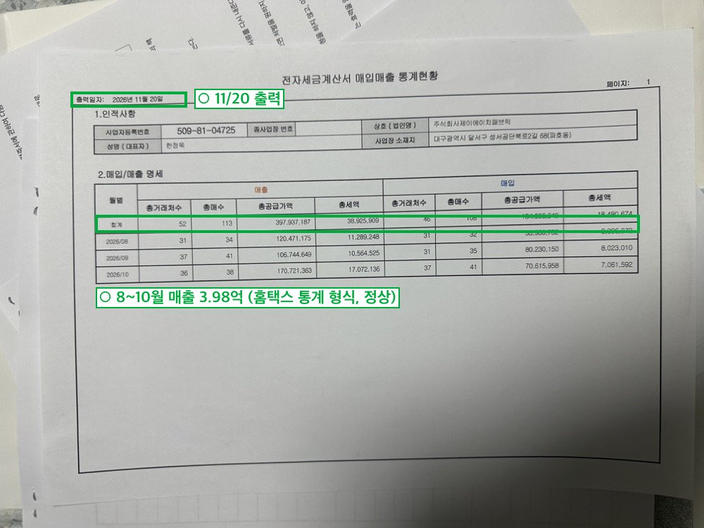

초록 = 맞음 · 빨강 = 이상한 점
결론: 담보취소 동의서와 인감증명서는 문제없음. 세금계산서 합계표(갑) 1장만 날짜가 이상함.

테두리 글자, 위쪽 점, 가운데 '代表理事' 배치가 같음. 실물로 한 번 더 겹쳐 보면 확실함.

주민번호는 가림. 진위는 인터넷등기소 → 발급확인 메뉴에서 CBAR-OKRN-CRP3로 확인할 수 있음.

작성일 12/28은 아직 안 온 날짜이고, 기간도 정식 신고 기간(2기 7/1~12/31)이 아님. 합계 금액은 관리용 표와 같음 → 홈택스 신고본이 아니라 회계프로그램에서 서식만 뽑은 것으로 보임. 압류 대상 거래처를 찾는 용도로는 관리용 표를 쓰면 됨.


